ภาพรวมบทนี้: บทนี้ปูพื้นตั้งแต่ สถาปัตยกรรมก่อนยุคเว็บ (layer / tier) → HTTP (request / response) → HTML vs XML → การเก็บข้อมูลฝั่ง browser (Cookies, LocalStorage, sessionStorage) → JSON และการแปลง object ↔ string → Web Services และ REST (6 constraints, uniform interface, HTTP methods) แล้วปิดด้วยการ เรียก Web Service ด้วย JavaScript ผ่าน XMLHttpRequest และ Fetch Class Objectives (สไลด์ 2): อธิบายแนวคิดพื้นฐานของ JSON · อธิบายแนวคิดพื้นฐานของ Web Services · เรียก Web Services ด้วย JavaScript ได้
บทนี้ไม่มีโจทย์คำนวณ แต่มี โค้ด / ตัวอย่าง request-response หลายจุด (HTTP message, XML, JSON, XHR, fetch) — เฉลยทีละขั้นและรันตรวจด้วย node แล้ว
📌 เลขสไลด์ในสรุปนี้ = เลขหน้า PDF (1–90) — เลขที่พิมพ์มุมขวาล่างของสไลด์ไม่ตรงตั้งแต่หน้า 24 (หน้า 24–29 พิมพ์เป็น 26–31, หน้า 30–89 พิมพ์ +4 เช่นหน้า 30 = "34", หน้า 89 = "93", หน้า 90 = "96") เพราะไฟล์ PDF ตัดบางสไลด์ออก
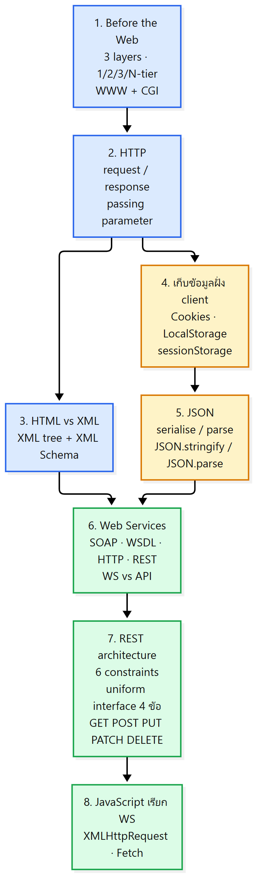
1. ก่อนมีเว็บ ระบบสารสนเทศแบ่งเป็นชั้นยังไง?
แก่นระบบสารสนเทศมี 3 layer (data / business logic / presentation) — การแยก layer ไปอยู่คนละเครื่องเรียกว่า tier ยิ่งแยกมาก (1 → 2 → 3 → N-tier) ยิ่งแต่ละส่วนเป็นอิสระและกระจายงานได้
1.1 3 layers กับ tier ต่างกันยังไง?
แก่นlayer = ชั้นทางตรรกะ 3 ชั้น ส่วน tier = การแยก layer เหล่านั้นออกจากกันทางกายภาพ (physical separation)
Information Systems ประกอบด้วย 3 layers:
| Layer | หน้าที่ |
|---|---|
| Resource Management (database) Layer | ชั้นเก็บ/จัดการข้อมูล (ฐานข้อมูล) |
| Application Logic / Business Layer | ชั้นตรรกะทางธุรกิจ การประมวลผล |
| Presentation (user interface) Layer | ชั้นหน้าจอที่ผู้ใช้เห็นและโต้ตอบ |
- Tier = "Physical separation of these layers" — คือเอา layer ไปวางแยกเครื่อง/แยกส่วนกันจริง ๆ
💡 เปรียบเหมือนร้านอาหาร: หน้าร้าน (presentation) ครัว (business logic) และห้องเก็บวัตถุดิบ (database) — ร้านเล็กอาจรวมทุกอย่างในห้องเดียว (1-tier) ร้านใหญ่แยกเป็นคนละห้อง/คนละตึก (หลาย tier)
1.2 1-tier, 2-tier, 3-tier ต่างกันยังไง?
แก่น1-tier = ทั้ง 3 layer อยู่เครื่องเดียว (ผูกกันแน่น ขยายยาก) · 2-tier = client-server · 3-tier = แต่ละ layer อยู่ tier ของตัวเองเกือบอิสระ (front-end / middleware / back-end)
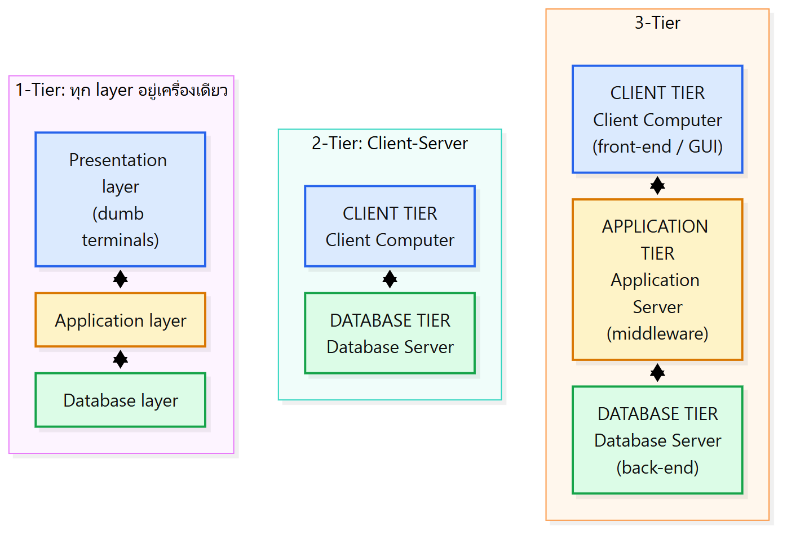
| 1-Tier | 2-Tier | 3-Tier | |
|---|---|---|---|
| ลักษณะ | 3 layers run on one machine หรือ implement ใน one software package | เรียกว่า Client-Server architecture | Each layer almost independent และรันบน tier แยกกัน |
| ใครอยู่ไหน | ทุกอย่างอยู่ที่เดียว — ยุค dumb terminals and mainframes | presentation อยู่ client, data layer อยู่ server — application layer อยู่ได้ทั้ง client หรือ server | Client Tier → Application Tier (Application Server) → Database Tier (Database Server) |
| ชื่อเรียกอื่น | – | – | front-end (หรือ GUI), middleware, back-end |
| ข้อเสียที่สไลด์บอก | layers tightly connected, ยากเรื่อง scalability และ portability | – | – |
1.3 N-tier คืออะไร?
แก่นN-tier (aka Distributed application) คล้าย 3-tier แต่เพิ่มจำนวน application server เป็น tier แยกหลายตัว เพื่อกระจาย business logic
- AKA Distributed application
- คล้าย 3-tier แต่ number of application servers are increased และแต่ละตัวเป็น individual tiers → เพื่อ distribute the business logic
ตัวอย่างในสไลด์ (วาดใหม่ตามรูป):
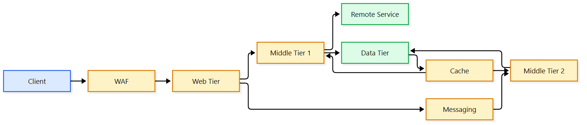
- Client → WAF → Web Tier → แยกไป Middle Tier 1 (ตรง) และ Middle Tier 2 (ผ่าน Messaging)
- Middle Tier 1 เรียก Remote Service และ Data Tier, Middle Tier 2 ใช้ Data Tier
- มี Cache อยู่ระหว่าง Data Tier กับ Middle Tier ทั้งสอง
สไลด์แสดงแค่รูปนี้ ไม่ได้อธิบายแต่ละกล่อง (เช่น WAF) เพิ่มเติม
1.4 Web Application Architecture (ตัวอย่าง Easyrec)
แก่นสไลด์ยกตัวอย่างเว็บแอปจริงที่แบ่งเป็นหลาย layer/server — client หลายตัวคุยกับระบบผ่าน "Web Service API" ชั้นเดียว
สไลด์นี้เป็นรูปล้วน (สถาปัตยกรรม Easyrec จาก Wikipedia) วาดใหม่ส่วนหลักได้ดังนี้:
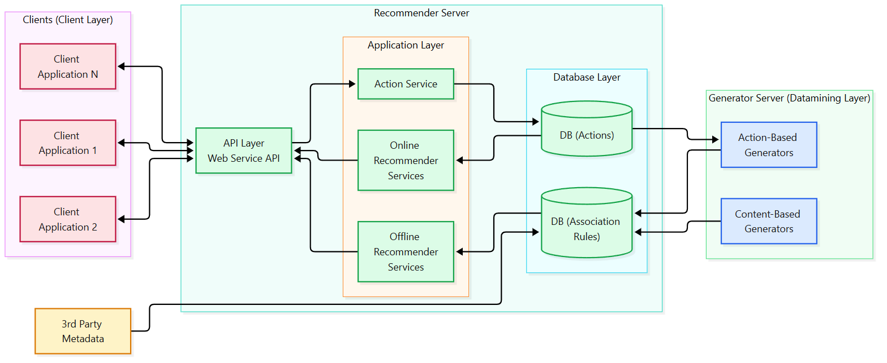
| ส่วน | Layer | สิ่งที่อยู่ข้างใน |
|---|---|---|
| Clients | Client Layer | Client Application 1, 2, …, N — คุยสองทางกับ Web Service API |
| Recommender Server | API Layer | Web Service API (ประตูเดียวที่ client เรียก) |
| Application Layer | Online Recommender Services, Action Service, Offline Recommender Services | |
| Database Layer | DB (Actions), DB (Association Rules) | |
| Generator Server | Datamining Layer | Action-Based Generators, Content-Based Generators → เขียนลง DB (Association Rules) |
| 3rd Party Metadata | – | ส่งข้อมูลเข้า DB (Association Rules) |
| Administration Tool | Administration Layer | Management, API Documentation, Administration — มีเส้นเชื่อมไปยัง Recommender Server และ Generator Server (ไม่ได้วาดในรูปด้านบนเพื่อไม่ให้เส้นรก) |
💡 จุดที่เชื่อมกับบทนี้: client ทุกตัวเข้าถึงระบบผ่าน Web Service API — นี่คือบทบาทของ Web Service ที่จะเรียนในหัวข้อ 7
2. เว็บยุคแรกทำงานยังไง? (WWW basics + CGI)
แก่นเว็บยุคแรกสร้างบนระบบ client/server เดิม — ผู้ใช้คลิก URL → web server เรียก CGI script ที่ตรงกับ URL → script ทำงาน (ทำตัวเป็น client ของระบบเดิม) → ส่งผลกลับ → server ส่งหน้าเว็บให้ browser
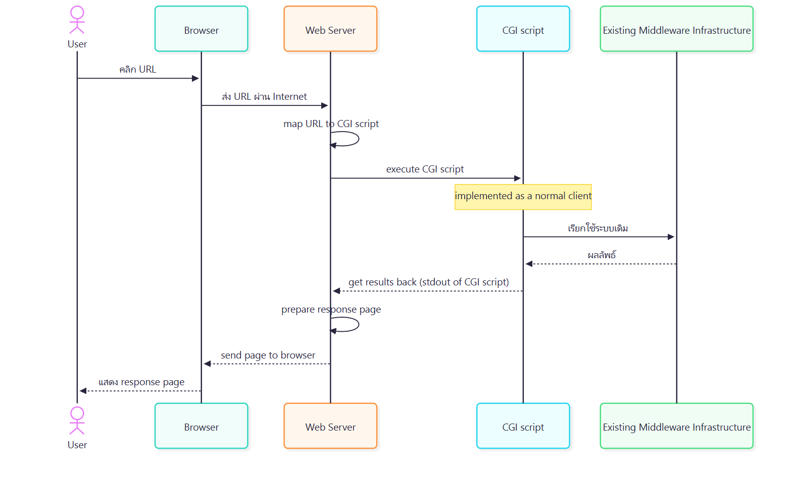
ขั้นตอนตามสไลด์:
- ผู้ใช้ คลิก URL → server invoke script ที่ตรงกับ URL นั้น (web server: map URL to CGI script → execute CGI script)
- CGI script (หรือโปรแกรม) ทำตัวเป็น client แบบดั้งเดิม ("implemented as a normal client") คุยกับ Existing Middleware Infrastructure
- script ทำงาน สร้างผลลัพธ์ แล้ว ส่งกลับให้ server (มักเป็น address of a web page) — server get results back (stdout of CGI script)
- server ดึงหน้านั้นมาแล้วส่งให้ browser (prepare response page → send page to browser)
3. HTTP คืออะไร และ request / response หน้าตาเป็นยังไง?
แก่นHTTP คือโปรโตคอลแลกเปลี่ยนเอกสารที่เป็นรากฐานของการแลกข้อมูลบนเว็บ — request มี 3 ส่วน (request line / headers / body) และ response มี 3 ส่วน (status line / headers / body)
3.1 HTTP เป็น communication protocol แบบไหน?
แก่นHTTP ออกแบบมาเพื่อแลกเอกสาร คล้าย e-mail (ใช้ mail header ตาม RFC 822 และ MIME types) และเป็นฐานของการแลกข้อมูลทุกอย่างบนเว็บ
- HTTP was designed for exchanging documents — เกือบเหมือน e-mail (ใช้ RFC 822 compliant mail headers และ MIME types)
- เป็น foundation of any data exchange on the Web
- MIME type = กลไกบอก client ว่า เอกสารที่ส่งมาเป็นชนิดไหน
หน้าเว็บ 1 หน้า = หลาย request (สไลด์ 14) — browser ส่ง GET แยกไฟล์ละครั้ง และไฟล์อาจมาจากคนละ server:
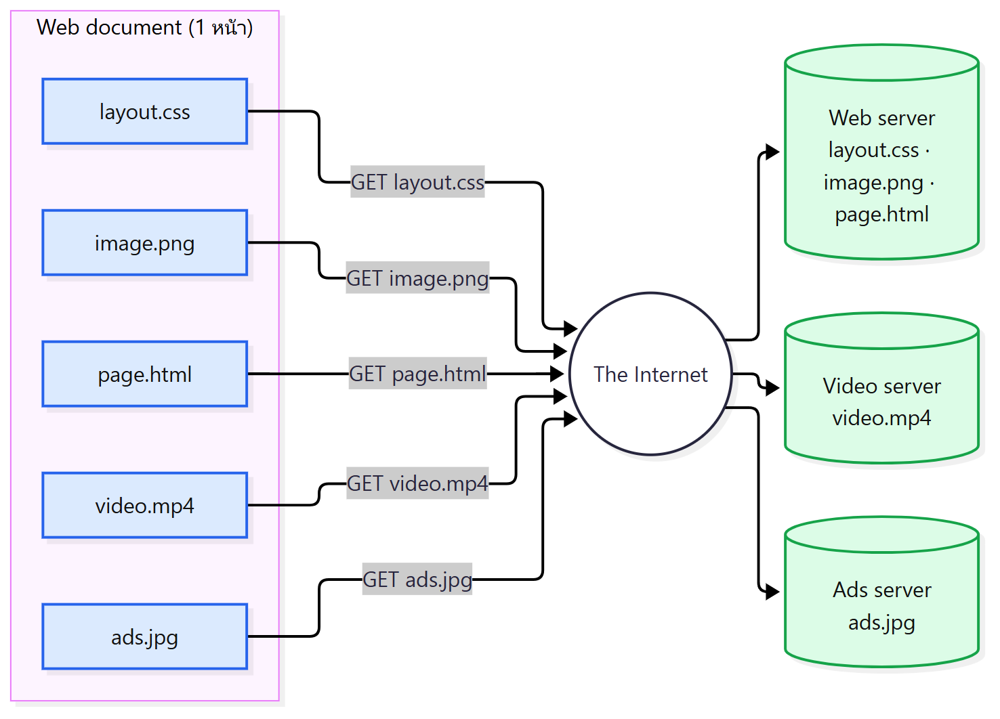
HTTP อยู่ตรงไหนในเว็บ (สไลด์ 15) — ชั้นบน (The Web) คือ HTML, CSS, JavaScript, Web APIs วางอยู่บน HTTP ซึ่งวางอยู่บน TLS/TCP, DNS/UDP และ IP:
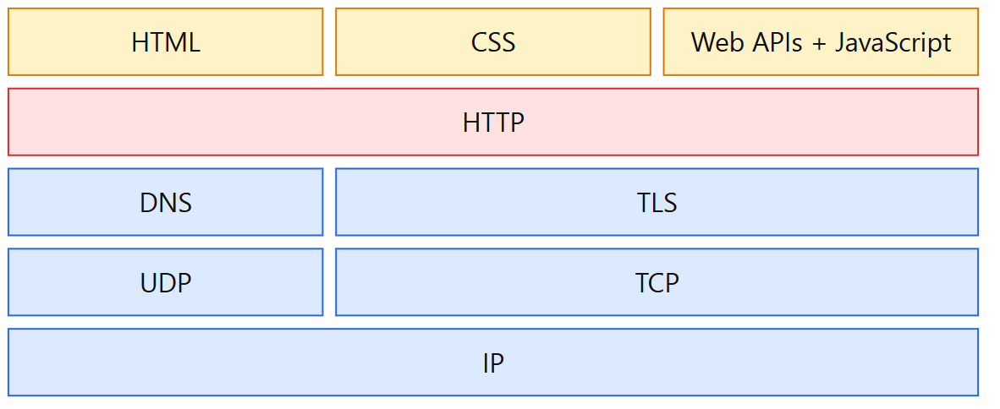
3.2 HTTP มีลักษณะสำคัญอะไรบ้าง?
แก่นHTTP เรียบง่าย อ่านได้ด้วยคน ขยายได้ และเป็น stateless แต่ไม่ใช่ sessionless
| คุณสมบัติ | ความหมาย |
|---|---|
| Simple and human readable | ออกแบบให้เรียบง่าย คนอ่าน message ได้ |
| Extensible | ขยายเพิ่มความสามารถได้ |
| Stateless, but not sessionless | ตัวโปรโตคอลไม่จำสถานะ แต่ยังทำ session ได้ (เช่นด้วย cookies — ดูหัวข้อ 5) |
3.3 HTTP Request มีส่วนประกอบอะไร?
แก่นRequest = Request Line (method, path, version) + Request Headers (ข้อมูลประกอบ) + Request Body (ข้อมูลที่ส่งไป)
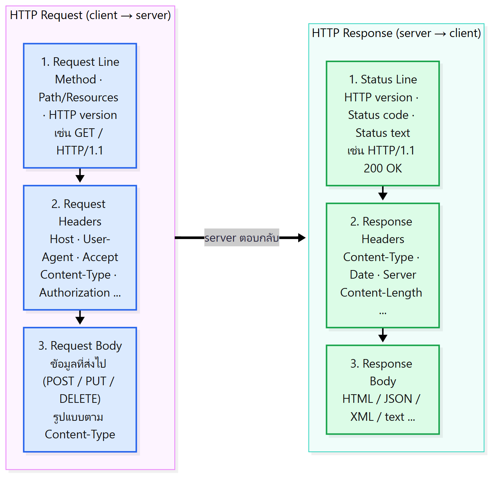
(1) Request Line (สไลด์ 18)
| Method | Path/Resources | HTTP Version |
|---|---|---|
| GET, POST, PUT, DELETE, … | ระบุ URI (Uniform Resource Identifier) หรือ URL (Uniform Resource Locator) ของ resource ที่ขอ | HTTP/1.1, HTTP/2.0 |
(2) Request Headers (สไลด์ 19–20)
| Header | ความหมาย |
|---|---|
| Host | domain name หรือ IP ของ server ที่ request ถูกส่งไป |
| User-Agent | client application ที่ส่ง request เช่น web browser และ OS |
| Accept | media types ที่ client รับได้/อยากได้ใน response เช่น application/json (JSON), text/html (HTML), image/png (PNG) |
| Content-Type | ชนิด/รูปแบบของข้อมูลที่ส่งไปใน request body |
| Authorization | credentials หรือ tokens เพื่อขอสิทธิ์เข้าถึง protected resources |
| และอื่น ๆ | – |
⚠️ Accept vs Content-Type ใน request: Accept = "ฉันอยากได้คำตอบเป็นชนิดไหน" | Content-Type = "ข้อมูลที่ฉันส่งไปเป็นชนิดไหน"
(3) Request Body (สไลด์ 21)
- เก็บ ข้อมูลที่ client ส่งให้ server ใช้หลัก ๆ กับ POST, PUT หรือ DELETE
- รูปแบบข้อมูล ขึ้นกับ header Content-Type
ตัวอย่างที่ 1 — request แบบย่อ (สไลด์ 22)
GET / HTTP/1.1
Host: developer.mozilla.org
Accept-Language: fr
แยกทีละส่วน:
- บรรทัดแรก = Request Line → method =
GET, path =/, version =HTTP/1.1 - สองบรรทัดถัดมา = Request Headers →
Hostบอก server ปลายทาง,Accept-Language: frขอภาษาฝรั่งเศส - ไม่มี body (GET)
ตัวอย่างที่ 2 — POST แบบเต็ม (สไลด์ 23) สไลด์ระบายสีแบ่ง header เป็น 3 กลุ่ม:
POST / HTTP/1.1
Host: localhost:8000
User-Agent: Mozilla/5.0 (Macintosh;… )… Firefox/51.0
Accept: text/html,application/xhtml+xml,…,*/*;q=0.8
Accept-Language: en-US,en;q=0.5
Accept-Encoding: gzip, deflate
Connection: keep-alive
Upgrade-Insecure-Requests: 1
Content-Type: multipart/form-data; boundary=-12656974
Content-Length: 345
-12656974
(more data)
| ส่วน | บรรทัด | กลุ่ม header (ตามสีในสไลด์) |
|---|---|---|
| Request Line | POST / HTTP/1.1 |
– |
| Request Headers | Host, User-Agent, Accept, Accept-Language, Accept-Encoding | Request headers |
| Connection, Upgrade-Insecure-Requests | General headers | |
| Content-Type, Content-Length | Representation headers | |
| Request Body | -12656974 (more data) |
– |
3.4 HTTP Response มีส่วนประกอบอะไร?
แก่นResponse = Status Line (version, status code, status text) + Response Headers + Response Body (เนื้อหาจริง ชนิดตาม Content-Type)
(1) Status Line (สไลด์ 25)
| HTTP Version | Status Code | Status Text |
|---|---|---|
| HTTP/1.1, HTTP/2.0 | 200: OK – request สำเร็จ | OK |
| 404: Not Found – ไม่พบ resource ที่ขอบน server | Not Found | |
| 500: Internal Server Error – เกิด error ที่ server | Internal Server Error |
(2) Response Headers (สไลด์ 26)
| Header | ความหมาย |
|---|---|
| Content-Type | ชนิด/รูปแบบของ response body เช่น text/html, application/json, image/png |
| Date | วันเวลาที่สร้าง response |
| Server | ซอฟต์แวร์ web server และเวอร์ชันที่ประมวลผล request |
| Content-Length | ขนาดของ response body เป็น bytes |
| และอื่น ๆ | – |
(3) Response Body (สไลด์ 27)
- ข้อมูล/เนื้อหาจริงที่ server ส่งกลับ
- เป็น HTML, JSON, XML, plain text หรือรูปแบบอื่นตามที่ Content-Type ระบุ
ตัวอย่าง response (สไลด์ 28)
HTTP/1.1 200 OK
Date: Sat, 09 Oct 2010 14:28:02 GMT
Server: Apache
Last-Modified: Tue, 01 Dec 2009 20:18:22 GMT
ETag: "51142bc1-7449-479b075b2891b"
Accept-Ranges: bytes
Content-Length: 29769
Content-Type: text/html
<!DOCTYPE html... (here come the 29769 bytes of the requested web page)
อ่านทีละขั้น:
- Status Line
HTTP/1.1 200 OK→ version = HTTP/1.1, status code = 200, status message = OK (สำเร็จ) - Headers → server คือ Apache, body ยาว 29769 bytes, ชนิด text/html
- Body → หน้า HTML ยาว 29769 bytes ตรงกับ Content-Length
ตัวอย่าง response แบบเต็ม (สไลด์ 29) สไลด์แบ่ง header เป็น 3 กลุ่มเช่นกัน (body = (body)):
| กลุ่ม (ตามสีในสไลด์) | Headers |
|---|---|
| Response headers | Access-Control-Allow-Origin: *, Etag, Server: Apache, Set-Cookie: csrftoken=…, Vary: Cookie, Accept-Encoding, X-Frame-Options: DENY |
| General headers | Connection: Keep-Alive, Date, Keep-Alive: timeout=5, max=999, Transfer-Encoding: chunked |
| Representation headers | Content-Encoding: gzip, Content-Type: text/html; charset=utf-8, Last-Modified |
💡
Set-Cookieในตัวอย่างนี้คือวิธีที่ server ส่ง cookie มาให้ browser — เชื่อมกับหัวข้อ 5 ที่ว่า cookie ถูกจัดการผ่าน HTTP headers ได้
3.5 HTTP Components
สไลด์นี้เป็นลิงก์ให้ไปอ่านต่อ 3 เรื่อง: HTTP request methods, HTTP headers, HTTP response status codes (สไลด์ไม่มีเนื้อหาเพิ่มในหน้า)
3.6 ส่ง parameter ไปกับ HTTP ยังไง?
แก่นการมี form ทำให้ผู้ใช้ส่งข้อมูลให้ server ได้ (ต้องแก้ HTML และ HTTP) — POST ใส่ข้อมูลไว้ใน body ส่วน GET ต้องใส่ parameter ไว้ใน URL
ตัวอย่าง POST ไปยัง CGI script:
POST /cgi-bin/post-query HTTP/1.0
Accept: www/source
Accept: text/html
Accept: video/mpeg
Accept: image/jpeg
...
Accept: application/postscript
User-Agent: Lynx/2.2 libwww/2.14
Content-type: application/x-www-form-urlencoded
Content-length: 150
* a blank line *
&name = Cesare+Pautasso
&email= pautasso@inf.ethz.ch
...
อ่านทีละส่วน (ตามคำอธิบายข้างรูปในสไลด์):
POST /cgi-bin/post-query→ POST request ระบุ CGI script ที่จะรัน (post-query)- headers (Accept, User-Agent, …) → "As before" คือเหมือน request ปกติ — มี
Content-type: application/x-www-form-urlencodedบอกว่า body เป็นข้อมูลจาก form - บรรทัดว่าง คั่นระหว่าง headers กับ body
&name=…&email=…→ ข้อมูลที่ผู้ใช้กรอกใน form แล้วส่งกลับไป server- ถ้าใช้ GET ก็ได้ แต่ต้องเอา parameter ไปต่อใน URL:
/cgi-bin/post-query?name=...&email=...
4. HTML ต่างจาก XML ยังไง?
แก่นHTML บอกแค่ "จะแสดงผลยังไง" สำหรับคนอ่าน ไม่บอกความหมายของข้อมูล → จึงมี XML ซึ่งให้ตั้ง tag เอง ใช้กำหนดโครงสร้างข้อมูลเพื่อแลกเปลี่ยน/จัดเก็บ ให้โปรแกรมประมวลผลได้
4.1 ทำไมต้องมี XML?
- HTML = markup language ที่อธิบายว่าเอกสาร ควรแสดงผลยังไง (visual format)
- HTML เป็นแค่หนึ่งใน markup languages — บางภาษามีมาก่อน HTML เช่น SGML (Standard Generalized Markup Language)
- HTML มีแค่ primitives สำหรับจัดรูปแบบเอกสาร โดยคิดถึงผู้ใช้ที่เป็นคน
- ใช้ HTML ไม่มีทางบอกว่าเนื้อหาคืออะไร (semantics) → จึงเสนอมาตรฐาน XML
4.2 XML มีคุณสมบัติอะไร?
แก่นXML ตั้ง tag เองได้ มี schema กำหนดชนิดข้อมูล ไม่ได้ทำมาให้ browser แสดง แต่ให้โปรแกรม/เครื่องประมวลผล และใช้เป็นภาษากลางตอนเรียก service ข้าม Internet
| HTML | XML | |
|---|---|---|
| tag | pre-defined | ไม่ pre-defined (ตั้งเอง) |
| เป้าหมาย | แสดงผลให้คนดู | กำหนดโครงสร้างข้อมูลแบบมาตรฐาน เพื่อ แลกเปลี่ยนและจัดเก็บ |
| ใครใช้ | browser | ไม่ได้ตั้งใจให้ browser — ให้ โปรแกรมและเครื่อง ประมวลผลอัตโนมัติ |
| ชนิดข้อมูล | – | XML Schemas support data types |
- XML ใช้เป็น ภาษากลางสำหรับ marshalling/serializing arguments ตอนเรียก service ข้าม Internet (แปลงพารามิเตอร์เป็นข้อความเพื่อส่งไป)
4.3 โครงสร้างเอกสาร XML เป็นยังไง?
แก่นเอกสาร XML เป็นโครงสร้างต้นไม้ เริ่มที่ root แตกกิ่งไปถึง leaves
<?xml version="1.0" encoding="ISO-8859-1"?>
<note>
<to>Wud</to>
<from>Bell</from>
<heading>Reminder</heading>
<body>Please buy fruits today</body>
</note>
| บรรทัด | ชื่อที่สไลด์ชี้ |
|---|---|
<?xml version="1.0" encoding="ISO-8859-1"?> |
XML Declaration – Version and Encoding |
<note> |
Root element |
<to>, <from>, <heading>, <body> |
Child element |
</note> |
End Root element |
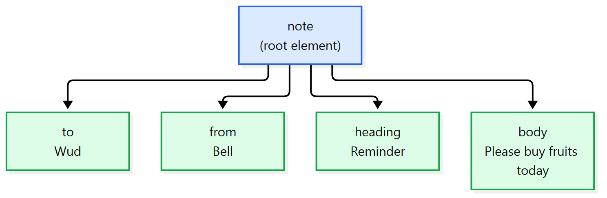
4.4 XML Schema กับเอกสาร XML สัมพันธ์กันยังไง?
แก่นXML Schema เป็น "แม่แบบ" ที่กำหนดว่า element นี้ต้องมีลูกอะไร เรียงยังไง ชนิดอะไร — เอกสาร XML จริงต้องเป็นไปตามนั้น
Schema (ซ้าย):
<xs:element name="university">
<xs:complexType>
<xs:sequence>
<xs:element name="name" type="xs:string"/>
<xs:element name="address" type="xs:string"/>
<xs:element name="city" type="xs:string"/>
<xs:element name="country" type="xs:string"/>
</xs:sequence>
</xs:complexType>
</xs:element>
เอกสารที่ได้ตาม schema (ขวา):
<university>
<name>Mahidol</name>
<address> 999 Phuttamonthon 4 Road</address>
<city>Nakhon Pathom</city>
<country>Thailand</country>
</university>
อ่าน schema ทีละขั้น:
xs:element name="university"→ มี element ชื่อuniversityxs:complexType→ เป็นชนิดซับซ้อน (มี element ลูก)xs:sequence→ ลูกต้องเรียงตามลำดับ:name→address→city→country- ลูกแต่ละตัวมี
type="xs:string"→ เป็นข้อความ (นี่คือตัวอย่างของ "XML Schemas support data types")
⚠️ ในสไลด์ 36 บรรทัดแรกพิมพ์เป็น
name=”university"(ใช้เครื่องหมายคำพูดแบบโค้ง”ตัวหน้า) — ถ้าเขียนจริงต้องใช้"ตรงทั้งคู่ (สรุปนี้แก้ให้แล้วในโค้ดด้านบน)
5. Cookies, LocalStorage, sessionStorage ต่างกันยังไง?
แก่นทั้งสามเก็บข้อมูล key/value ไว้ที่ browser — cookie เล็ก (4KB) มีวันหมดอายุ และถูกส่งไป server ทุก request; LocalStorage ใหญ่กว่า (≥5MB/domain) อยู่จนกว่าจะลบ และไม่ถูกส่งไป server; sessionStorage เหมือน LocalStorage แต่อยู่แค่ใน tab ปัจจุบัน
5.1 Cookie คืออะไร ใช้ทำอะไร?
แก่นcookie = ข้อมูล key/value ขนาดเล็กที่ server ส่งมาให้ browser เก็บ แล้ว browser ส่งกลับไปกับ request ถึง server เดิม — ใช้รักษา session state ข้ามหลายหน้า เช่น login ค้าง ตะกร้าสินค้า
- ชื่อเรียกหลายแบบ เช่น HTTP cookie, web cookie
- เป็น ข้อมูลขนาดเล็กมาก ที่ ดาวน์โหลดมาจาก web server ตอนเข้าเว็บ แล้ว browser เก็บไว้ในเครื่อง
- ปกติถูก ส่งไปกับ request ถึง web server เดียวกัน และใช้บอก server ว่า request มาจากไหน เช่น keeping a user logged-in
- เก็บข้อมูลแบบ key/value pairs
- ช่วย maintain session state over several page requests เช่น ติดตามของในตะกร้าสินค้า
- จำกัดขนาด ไม่เกิน 4KB และ มีวันหมดอายุ (expiry)
จุดประสงค์หลักของ cookies (สไลด์ 40): Session management, Personalization, Tracking
ตัวอย่าง cookie:
"username=Wudhichart; expires=Thu, 18 Dec 2016 12:00:00 UTC";
username=Wudhichart→ คู่ key/value ที่เก็บexpires=…→ วันเวลาหมดอายุของ cookie- สไลด์เขียนว่า "See example how to manipulate cookies" (ตัวอย่างโค้ดอยู่นอกสไลด์ ไม่ได้ใส่ในไฟล์)
💡 เปรียบเหมือนบัตรคิว/สายรัดข้อมือที่ร้านให้ไว้ — ทุกครั้งที่กลับไปร้านเดิมก็ยื่นบัตรนี้ให้ดู ร้านจึงจำได้ว่าเราเป็นใคร (แต่บัตรเล็ก จดได้น้อย และมีวันหมดอายุ)
5.2 LocalStorage คืออะไร ต่างจาก Cookie ยังไง?
แก่นLocalStorage ใช้เก็บข้อมูลเหมือน cookie แต่ใหญ่กว่า (≥5MB ต่อ domain) แชร์กันใน domain เดียว server แก้ผ่าน HTTP header ไม่ได้ และทั้ง key และ value ต้องเป็น string
คุณสมบัติ (สไลด์ 41):
- พื้นที่ อย่างน้อย 5MB ต่อ web domain (ขึ้นกับการตั้งค่า)
- เว็บแอปใน domain เดียวกันใช้ LocalStorage ร่วมกัน
- ข้อมูลใน LocalStorage ไม่ถูกจัดการโดย server ผ่าน HTTP headers
- 1 record = key/value pair และ ทั้ง key และ value ต้องเป็น string
Cookies vs LocalStorage (สไลด์ 42):
| Key differences | Cookies | LocalStorage |
|---|---|---|
| Storage Capacity | ประมาณ 4KB | ประมาณ 5MB ต่อ domain |
| Accessibility | เข้าถึงได้ทั้ง client side (JavaScript) และ server side (ผ่าน HTTP headers) | เข้าถึงได้ เฉพาะ client side (JavaScript) |
| Expiration | ตั้ง วันหมดอายุ ได้ | อยู่ในเครื่อง client จนกว่าผู้ใช้ลบเอง หรือโปรแกรมลบ |
| Transmission | ถูกแนบไปกับทุก HTTP request ถึง domain เดิมโดยอัตโนมัติ | ไม่ถูกส่งไป server อัตโนมัติ |
การใช้งาน LocalStorage ที่สไลด์ให้ไปดูตัวอย่าง (สไลด์ 43): Store data, Get data, Set data, Remove data, และ ใช้ GUI จัดการ LocalStorage (สไลด์ไม่ได้ใส่โค้ด)
5.3 sessionStorage ต่างจาก LocalStorage ยังไง?
แก่นsessionStorage คล้าย LocalStorage แต่มีอยู่แค่ใน browser tab ปัจจุบัน — refresh หน้าแล้วข้อมูลยังอยู่
- exists only within the current browser tab
- When page is refreshed, the sessionStorage is maintained (refresh ไม่หาย)
| Cookies | LocalStorage | sessionStorage | |
|---|---|---|---|
| ขนาด | ~4KB | ≥5MB/domain | (สไลด์ไม่ระบุ — บอกแค่ว่า "like LocalStorage") |
| ขอบเขต | ส่งไปกับ request ถึง server เดิม | ทุกเว็บแอปใน domain เดียวกัน | เฉพาะ tab ปัจจุบัน |
| อายุ | มี expiry | จนกว่าจะลบ | refresh แล้วยังอยู่ |
| server เข้าถึง | ได้ (HTTP headers) | ไม่ได้ | (สไลด์ไม่ระบุ) |
6. JSON คืออะไร และใช้เก็บ object ลง LocalStorage ยังไง?
แก่นLocalStorage รับแต่ string แต่ข้อมูลแอปเป็น object → ต้องแปลง object เป็น string โดยไม่เสียโครงสร้าง (serialisation) และแปลงกลับ (parsing) — JSON คือรูปแบบ string มาตรฐานที่ทำสิ่งนี้ได้ ใช้ JSON.stringify() / JSON.parse()
6.1 ทำไมต้องแปลง object เป็น string?
แก่นเพราะแอปออกแบบแบบ OOP ข้อมูลส่วนใหญ่เป็น object แต่ LocalStorage รับแค่ string — การแปลงต้องเก็บทั้งข้อมูลและโครงสร้างไว้ เพื่อแปลงกลับได้ภายหลัง
- เรามักออกแบบแอปตาม object-oriented paradigm → ข้อมูลส่วนใหญ่อยู่ในรูป object
- จะใช้ LocalStorage ต้อง แปลง object เป็น String (LocalStorage รับแค่ String)
- เงื่อนไขเดียว: การแปลงต้อง คงทั้งข้อมูลและโครงสร้างของ object เพื่อดึงกลับมา สร้าง object ใหม่ (reconstitute) ได้
| กระบวนการ | ชื่อเรียก |
|---|---|
| object → string | serialisation หรือ stringifying |
| string → object (ย้อนกลับ) | deserialisation หรือ parsing |
6.2 JSON ต่างจาก object literal ของ JavaScript ยังไง?
แก่นJSON มาจากแนวคิด object literal ของ JS แต่ต่างกัน 3 ข้อ — JSON เป็น String, ไม่ support properties (ตามที่สไลด์เขียน) และชื่อ property ต้องอยู่ในเครื่องหมายคำพูด
- object literal notation ของ JavaScript นำไปสู่ มาตรฐานรูปแบบข้อมูล ที่ใช้ส่งข้อมูลมีโครงสร้าง (เช่น object data) อย่างแพร่หลาย → เรียกว่า JavaScript Object Notation (JSON)
- ความต่างสำคัญระหว่าง JSON กับ object literal:
- JSON is a String
- JSON does not support properties
- Property names in JSON are enclosed by quotes (ชื่อ key ต้องมี
"…")
⚠️ ข้อ 2 "JSON does not support properties" สไลด์เขียนไว้สั้น ๆ แบบนี้ และดูขัดกับข้อ 3 ที่พูดถึง "property names in JSON" — ตีความไม่ได้ชัดจากสไลด์ ถ้าออกสอบให้ตอบตามข้อความในสไลด์ หรือถามอาจารย์ว่าหมายถึงอะไร
6.3 JSON มีชนิดข้อมูลพื้นฐานอะไรบ้าง?
แก่น6 ชนิด — Number, String, Boolean, Array, Object (JSON object), null
ทดลองด้วย node (JSON.stringify object ที่มีครบ 6 ชนิด):
JSON.stringify({n: 1, s: "a", b: true, a: [1,2], o: {x: 1}, z: null})
// ผลรันจริง: {"n":1,"s":"a","b":true,"a":[1,2],"o":{"x":1},"z":null}
6.4 เขียน object เป็น JSON หน้าตายังไง?
แก่นต่างจาก object literal ตรงที่ key ทุกตัวต้องมี "…" — JSON object ใช้ { }, JSON array ใช้ [ ] ซ้อนกันได้
Object literal (JS) vs JSON (สไลด์ 50):
var wudhichart = {
firstName: "Wudhichart",
lastName: "sawangphol",
age: 30,
university: "Mahidol",
feesPaid: true
};
{
"wudhichart" : {"firstName": "Wudhichart",
"lastName": "sawangphol",
"age": 30,
"university": "Mahidol",
"feesPaid": true}
}
สังเกตทีละจุด:
- object literal: key ไม่มี เครื่องหมายคำพูด (
firstName:) - JSON: key มี
"firstName":ทุกตัว (ข้อ 3 ของสไลด์ 48) - JSON ห่ออีกชั้นด้วย key
"wudhichart"→ object ซ้อน object - ค่า
30เป็น Number,trueเป็น Boolean,"Mahidol"เป็น String
รันตรวจด้วย node:
JSON.parse(ข้อความ JSON ของสไลด์ 50).wudhichart.university // → "Mahidol" (parse ผ่าน = JSON ถูกรูปแบบ)
JSON.parse('{firstName: "Wudhichart"}') // → SyntaxError (key ไม่มี "..." ไม่ใช่ JSON)
JSON object (สไลด์ 51):
var jsonobject = {
"wudhichart" : {
"firstName": "Wudhichart",
"lastName": "Sawangphol",
"age": 30,
"university": "Mahidol",
"feesPaid": true
}
};
JSON Array (สไลด์ 52) — "people" เป็น array ของ object 2 คน:
var jsonarray = {
"people": [{
"firstName": "Wudhichart",
"lastName": "Sawangphol",
"age": 30,
"university": "Mahidol",
"feesPaid": true
}, {
"firstName": "Pawitra",
"lastName": "Chiravirakul",
"age": 30,
"university": "Mahidol",
"feesPaid": true
}]
};
รันตรวจด้วย node: jsonarray.people เป็น array (Array.isArray → true) ยาว 2 และ jsonarray.people[1].firstName → "Pawitra"
⚠️ สไลด์ 51–52 เขียนเป็น
var jsonobject = { ... };ซึ่งใน JavaScript คือ object (รันจริงtypeof jsonobject→"object") ไม่ใช่ string — ส่วน{ ... }คือ "รูปแบบ JSON" แต่ตามสไลด์ 48 ที่ว่า "JSON is a String" ถ้าจะได้ JSON ที่เป็น string จริงต้องผ่านJSON.stringify()(หัวข้อ 6.5)
JSON Editor (สไลด์ 53): เครื่องมือออนไลน์ http://jsoneditoronline.org/
6.5 ใช้ JSON เก็บ object ลง LocalStorage ยังไง?
แก่นJSON เป็น string และเก็บโครงสร้าง object ได้ครบ → stringify ก่อนเก็บ, parse ตอนดึงกลับ
JSON ช่วยได้เพราะ: JSON is String และ JSON can keep all structures of an object
| ทิศทาง | ฟังก์ชัน JavaScript |
|---|---|
| Object → JSON | JSON.stringify(object) |
| JSON → Object | JSON.parse(JSON) |
ลองแปลง object ของสไลด์ 50 ไปกลับ (รันด้วย node):
const s = JSON.stringify(wudhichart);
typeof s; // "string"
s; // '{"firstName":"Wudhichart","lastName":"sawangphol","age":30,"university":"Mahidol","feesPaid":true}'
const back = JSON.parse(s);
typeof back; // "object"
back.age; // 30 (ยังเป็น number)
back.feesPaid; // true (ยังเป็น boolean)
ทีละขั้น:
JSON.stringify→ ได้ string ที่ key ทุกตัวมี"…"→ เอาไปเก็บใน LocalStorage ได้ (เพราะรับแค่ string)JSON.parse→ ได้ object กลับมา ชนิดข้อมูลข้างใน (number, boolean) ไม่เพี้ยน = "keep all structures of an object"
7. Web Service คืออะไร ต่างจาก API ยังไง?
แก่นWeb Service = ระบบซอฟต์แวร์ที่ให้เครื่องคุยกับเครื่องข้ามเครือข่าย (นิยาม W3C) ส่ง request/response ในรูปแบบที่โปรแกรม decode ง่าย (XML หรือ JSON) — Web Service ทุกตัวเป็น API แต่ API ไม่ใช่ Web Service ทุกตัว เพราะ WS ต้องใช้ network เสมอ
7.1 นิยามและลักษณะของ Web Service
- นิยาม W3C: "A Web service is a software system/application designed to support interoperable machine-to-machine interaction over a network"
- Hosting services on a remote machine — บริการอยู่บนเครื่องอื่น
- A standardized way of integrating web-based applications — วิธีมาตรฐานในการเชื่อมเว็บแอปเข้าด้วยกัน
- request และ response ถูก encode ในรูปแบบที่โปรแกรม decode ได้ง่าย
- encoding ที่นิยมที่สุด: XML (SOAP หรือ POX) และ JSON
- มี 2 แบบหลัก: SOAP และ RESTful web services (RESTful Web APIs)
💡 เปรียบเหมือนบริการ delivery ที่มีเมนูมาตรฐาน — แอปไหนก็สั่งได้ ขอแค่สั่งตามรูปแบบที่กำหนด (request) แล้วรับของกลับมาในรูปแบบที่ตกลงกัน (response)
7.2 Web Service สร้างบนมาตรฐานอะไร?
แก่นSOAP, WSDL, HTTP และ REST
| มาตรฐาน | หมายเหตุจากสไลด์ |
|---|---|
| SOAP – Simple Object Access Protocol | – |
| WSDL – Web Services Description Language | – |
| HTTP – Hypertext Transfer Protocol | ใช้เป็น transport protocol — SOAP/HTTP ใช้ขนส่ง message ข้าม network applications |
| REST – Representational state transfer | – |
7.3 Web Service vs API
| Web Service | API | |
|---|---|---|
| คืออะไร | ใช้ ปฏิสัมพันธ์ระหว่างเครื่องผ่าน network | interface ระหว่าง 2 แอปพลิเคชัน |
| ต้องใช้ network ไหม | ต้องใช้เสมอ | ไม่จำเป็น |
| ความสัมพันธ์ | All Web services are APIs | …but all APIs are not Web services |
- HTTP เป็นโปรโตคอลที่นิยมที่สุดในการสื่อสารของ WS
8. REST คืออะไร มีหลักการอะไรบ้าง?
แก่นREST เป็น "สถาปัตยกรรม" ไม่ใช่เทคโนโลยี/มาตรฐาน/โปรโตคอล — ใช้มาตรฐานที่มีอยู่ (HTTP, URL, XML/HTML/JSON, MIME types) และมี 6 constraints ที่ทำให้เป็นสไตล์ REST
8.1 REST คืออะไร ใช้มาตรฐานอะไร?
- REST (REpresentational State Transfer) is an architecture
- NOT a technology, NOT standards specification, NOT a protocol
- REST ใช้มาตรฐาน: HTTP, URL, XML/HTML/JSON/etc, MIME Types / Media types เช่น
text/xml,image/gif,application/json,audio/mpeg
⚠️ ข้อสอบชอบถาม: REST ไม่ใช่โปรโตคอล (ต่างจาก SOAP ที่ชื่อมีคำว่า Protocol) — REST เป็น architectural style
8.2 REST constraints มีอะไรบ้าง?
แก่น6 ข้อ — Client/Server, Stateless, Cacheable, Uniform Interface, Layered Systems, Code-On-Demand (ข้อสุดท้ายเป็น optional)
- REST constraints = design rules ที่ใช้กำหนดลักษณะเฉพาะของ REST architectural style
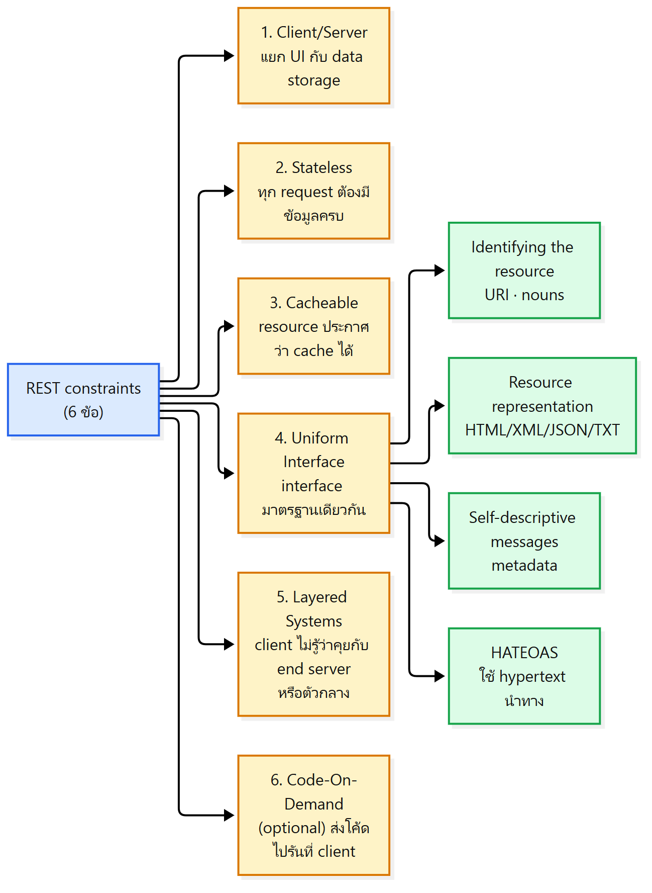
💡 จำ 6 ข้อ: C-S-C-U-L-C → Client/Server · Stateless · Cacheable · Uniform interface · Layered system · Code on demand
8.3 Client/Server
แก่นclient กับ server ต้องพัฒนาแยกกันได้โดยไม่พึ่งกัน — แยกเรื่อง UI ออกจากเรื่องเก็บข้อมูล
- client application และ server application MUST be able to evolve separately without any dependency
- แยก user interface concerns (ของ client) ออกจาก data storage concerns (ของ server)
- ผลดี:
- ให้แต่ละส่วน evolve independently
- เพิ่ม portability ของ UI ข้ามหลาย platform
- เพิ่ม scalability เพราะ server components ง่ายขึ้น
8.4 Stateless
แก่นserver ไม่จำอะไรจาก request ก่อนหน้า — ทุก request ต้องมีข้อมูลครบในตัว (no session, no history)
- server ไม่เก็บอะไรเกี่ยวกับ HTTP request ล่าสุด ของ client — ถือว่า ทุก request เป็นของใหม่: No session, no history
- แต่ละ request ต้องมีข้อมูลทั้งหมดที่จำเป็น ให้ server เข้าใจ
- ใช้ context ที่เก็บไว้บน server ไม่ได้
- ผลดี: เพิ่ม scalability และ reliability
💡 เปรียบเหมือนส่งจดหมายถึงหน่วยงานที่ไม่มีแฟ้มประวัติเรา — ทุกฉบับต้องแนบชื่อ เลขบัตร และเรื่องที่ขอให้ครบในฉบับเดียว เพราะเขาไม่จำฉบับก่อน
8.5 Cacheable
แก่นresource ที่ cache ได้ต้องประกาศตัวว่า cacheable — ช่วยให้ client เร็วขึ้นและ server รับโหลดน้อยลง แต่ถ้าข้อมูลใน cache เก่า ความน่าเชื่อถืออาจลดลง
- ใช้ caching กับ resource เมื่อเหมาะสม และ resource MUST declare themselves cacheable
- ผลดี: performance ดีขึ้นฝั่ง client และ scalability ดีขึ้นฝั่ง server เพราะโหลดลดลง
- ถ้า response cacheable → client cache มีสิทธิ์นำ response นั้นมาใช้ซ้ำ กับ request ที่เท่ากันในภายหลัง
- ข้อเสีย: reliability อาจลดลง ถ้า stale data (ข้อมูลเก่า) ใน cache ต่างจากข้อมูลที่จะได้ถ้าส่ง request ไป server ตรง ๆ มาก
8.6 Uniform interface
แก่นทุก resource เข้าถึงผ่าน interface กลางแบบเดียวกัน (HTTP GET/POST/PUT/DELETE) และมี URI เดียวต่อ resource — ระบบโดยรวมเรียบง่ายขึ้น แต่ประสิทธิภาพลดลงเพราะส่งข้อมูลในรูปแบบมาตรฐาน ไม่ใช่แบบเฉพาะของแอป
- ต้องกำหนด interface ของ API สำหรับ resource ที่เปิดให้ผู้ใช้ API และ ทำตามอย่างเคร่งครัด
- resource หนึ่งควรมี only one logical URI และมีวิธีดึงข้อมูลที่เกี่ยวข้องเพิ่มเติม
- ทุก resource เข้าถึงด้วย generic interface (เช่น HTTP GET, POST, PUT, DELETE)
- ผลดี: สถาปัตยกรรมโดยรวมเรียบง่ายขึ้น
- ข้อเสีย: "degrades efficiency, since information is transferred in a standardized form rather than one which is specific to an application's needs"
Guiding principles ของ uniform interface (4 ข้อ) (สไลด์ 67):
- Identifying the resource
- Resource representation
- Self-descriptive Messages
- Hypermedia as the Engine of Application State (HATEOAS)
8.7 Identifying the resource
แก่นทุก resource ต้องมี URI เฉพาะ — resource คืออะไรก็ได้ที่ตั้งชื่อได้ ใช้ "คำนาม" ไม่ใช่ "คำกริยา" และใช้ URI ที่อ่านง่าย ('Nice' URIs)
- แต่ละ resource ต้องมี specific and cohesive URI
- แนวคิดของ REST:
- A resource
- อะไรก็ได้ที่ตั้งชื่อได้ เป็น resource ได้ เช่น document หรือ image, temporal service, collection ของ resource อื่น, สิ่งของที่ไม่ใช่เสมือน (non-virtual object) เช่น คน
- ใช้ Nouns instead of verbs
- A resource identifier
- ทุก resource เข้าถึงได้ด้วย URI/URL
- URI ระบุ resource ตัวใดตัวหนึ่งโดยเฉพาะ
- ใช้ 'Nice' URIs
- A resource
ตัวอย่าง (สไลด์ 69–70):
HTTP/1.1 GET
https://www.googleapis.com/customsearch/v1?parameters
| ส่วนของ URL | สไลด์ชี้ว่าเป็น |
|---|---|
googleapis.com |
Company/Owner |
customsearch |
API Name |
v1 |
Version |
?parameters |
parameter ที่ส่งไป (ใช้จริงในหัวข้อ 9.3) |
8.8 REST methods — ใช้ method ไหนทำอะไร?
แก่นGET = อ่าน, DELETE = ลบ, POST = สร้าง (บางทีแก้), PUT = แก้ (บางทีสร้าง), PATCH = แก้บางส่วน — PUT เป็น idempotent แต่ POST ไม่ใช่; ใช้ PUT เมื่อ client เป็นคนกำหนด URI ของ resource ใหม่ ใช้ POST เมื่อ server เป็นคนกำหนด
| Method | Meaning |
|---|---|
| GET | Retrieve a copy of a Resource (ดึงสำเนา resource) |
| DELETE | Remove a Resource (ลบ) |
| POST | Create or sometimes update |
| PUT | Update a Resource or sometimes create |
| PATCH | Update only part of a resource |
PUT vs POST:
- POST is not idempotent but PUT is
- client ใช้ PUT เมื่อ client เป็นคนกำหนด ว่า resource ใหม่จะมี URI อะไร
- client ใช้ POST เมื่อ server เป็นคนกำหนด URI ของ resource ใหม่
⚠️ สไลด์ไม่ได้ให้นิยามคำว่า idempotent — จำประโยค "POST is not idempotent but PUT is" ไว้ตามสไลด์ ถ้าต้องอธิบายความหมายให้ถามอาจารย์/ดูเอกสารประกอบ
⚠️ POST กับ PUT ทำได้ทั้งสร้างและแก้ — ต่างกันที่ "หน้าที่หลัก" (POST = create, PUT = update) และ "ใครกำหนด URI"
8.9 Resource representation
แก่นrepresentation = เอกสารที่จับ "สถานะปัจจุบัน" ของ resource — resource เดียวมีได้หลาย representation (HTML, XML, JSON, TXT…) client เลือกได้ผ่าน Accept header
- representation ของ resource = เอกสารที่จับสถานะปัจจุบันของ resource
- resource หนึ่ง มีได้หลาย representations
- client ระบุได้ว่ารับ representation แบบไหน (เช่นใน HTTP Accept header — ดูหัวข้อ 3.3)
- representation มี links สำหรับนำทางและเข้าถึง resource อื่นต่อ
- อยู่ในรูป HTML, XML, JSON, TXT และอื่น ๆ
💡 ช่วยจำ: ชื่อ REpresentational State Transfer เข้ากับข้อนี้ — representation คือ "เอกสารที่จับ state ปัจจุบัน" ของ resource
8.10 Self-descriptive Messages
แก่นทุก message ต้องมีข้อมูลพอบอกวิธีประมวลผลตัวเอง — คือมี metadata เช่น HTTP response code, Host, Content-Type
- แต่ละ message มี ข้อมูลเพียงพอที่จะบอกว่าต้องประมวลผล message นั้นยังไง
- ต้องมีการส่ง meta information (metadata) ใน request และ response
- ตัวอย่าง metadata: HTTP response code, Host, Content-Type ฯลฯ
8.11 HATEOAS
แก่นใช้ hypertext (links ใน response) เป็นทางนำทางผ่าน API — client ไม่ต้องรู้ URL ทั้งหมดล่วงหน้า แค่ตาม links ที่ server ให้มา
- "hypertext should be used to find your way through the API"
- ตัวอย่าง: JSON response จาก
HTTP GET http://api.domain.com/management/departments
{
"departmentId": 10,
"departmentName": "Administration",
"locationId": 1700,
"managerId": 200,
"links": [
{
"href": "10/employees",
"rel": "employees",
"type" : "GET"
}
]
}
อ่านทีละขั้น:
- 4 บรรทัดแรก = ข้อมูลของ department (id 10 ชื่อ Administration)
"links"= รายการ ลิงก์ไปยัง resource ที่เกี่ยวข้อง (ส่วนที่สไลด์ไฮไลต์)- ลิงก์นี้บอกว่า: ถ้าอยากได้ employees (
rel) ของแผนกนี้ ให้ส่ง GET (type) ไปที่10/employees(href) - client จึง "เดินทาง" ต่อใน API ได้ด้วย links ที่ได้รับ — นี่คือ HATEOAS
(รันตรวจด้วย node:
JSON.parseผ่าน,links[0].type→"GET",links[0].href→"10/employees")
8.12 Layered system
แก่นdeploy API แบบหลายชั้นได้ โดย client แยกไม่ออกว่าคุยกับ end server ตรง ๆ หรือผ่านตัวกลาง — ช่วยเรื่อง scalability ด้วย load balancing
- REST ให้ใช้ layered system architecture ในการ deploy API
- สถาปัตยกรรม transparent — client ปกติบอกไม่ได้ ว่าเชื่อมกับ end server โดยตรง หรือ ตัวกลาง (intermediary) ระหว่างทาง
- ใช้เพิ่ม system scalability โดยทำ load balancing ของ services ข้ามหลาย networks และ processors
8.13 Code on demand
แก่นconstraint เดียวที่เป็น optional — server ส่งโค้ด (applet/script) ให้ client ดาวน์โหลดไปรัน เพื่อขยายความสามารถ client โดยไม่ต้องผูกกับ logic ฝั่ง server
- optional constraint — ตั้งใจให้ logic ใน client (เช่น web browser) อัปเดตได้อิสระจาก logic ฝั่ง server
- ขยายความสามารถของ client ได้ด้วยการ ดาวน์โหลดและรันโค้ด ในรูป applets หรือ scripts
ตัวอย่าง: GET /api/resource ได้ response
{
"data": {
"id": 1,
"name": "Resource Name"
},
"code": "function printSomething() { console.log('Executing client-side code'); }"
}
ทีละขั้น:
"data"= ข้อมูล resource ปกติ"code"= โค้ดที่ server ส่งมาเป็น string (รันจริงtypeof r.code→"string")- client นำ string นี้ไปรัน → ฟังก์ชัน
printSomething()จะพิมพ์ข้อความ - รันตรวจด้วย node (สร้างฟังก์ชันจาก string แล้วเรียก) → ผลลัพธ์:
Executing client-side code
สไลด์ไม่ได้แสดงว่า client รันโค้ดนี้ด้วยคำสั่งอะไร — node ข้างบนเป็นแค่การตรวจว่าโค้ดใน string ทำงานได้และพิมพ์อะไร
9. เรียก Web Service ด้วย JavaScript ยังไง?
แก่นมี 2 วิธีพื้นฐาน — XMLHttpRequest (XHR) แบบเก่าที่ใช้ event/readyState และ Fetch แบบใหม่ที่คืน Promise และอ่าน response 2 ขั้น
- Basic approaches สำหรับเรียก WS ด้วย JavaScript (สไลด์ 78): XMLHttpRequest (XHR) และ Fetch
9.1 XMLHttpRequest ใช้ยังไง?
แก่นสร้าง object → open() ตั้งค่า → send() ส่ง → รอ event (load / error / progress) แล้วอ่าน status, statusText, response — ปัจจุบันใช้เพื่อรองรับสคริปต์เดิมและ browser เก่า
XHR คืออะไร ทำไมยังใช้ (สไลด์ 79):
- built-in browser object ที่ใช้ส่ง HTTP request ใน JavaScript
- ในเว็บสมัยใหม่ยังใช้ด้วย 2 เหตุผล: รองรับสคริปต์เดิมที่ใช้ XHR และ รองรับ browser เก่า
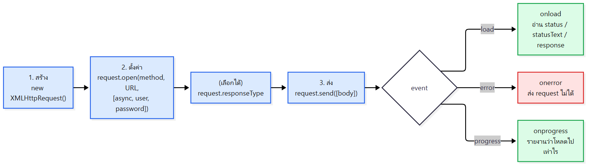
ขั้น 1 — สร้าง request (สไลด์ 79)
let request = new XMLHttpRequest()
ขั้น 2 — ตั้งค่า request (สไลด์ 80)
request.open(method, URL, [async, user, password])
| พารามิเตอร์ | ความหมาย |
|---|---|
method |
HTTP-method เช่น "GET" หรือ "POST" |
URL |
URL ที่จะขอ เป็น string หรือ URL object ก็ได้ |
async |
ถ้าตั้งเป็น false อย่างชัดเจน → request จะเป็น synchronous (สไลด์บอกว่าจะอธิบายภายหลัง) |
user, password |
login/password สำหรับ basic HTTP auth (ถ้าต้องใช้) |
[ ... ]= พารามิเตอร์ที่ไม่บังคับ
ขั้น 3 — เปิด connection และส่ง request (สไลด์ 81)
request.send([body])
- มีพารามิเตอร์ optional ตัวเดียว คือ
body - method อย่าง GET ไม่มี body แต่บาง method เช่น POST ใช้ body ส่งข้อมูลไป server (ตรงกับหัวข้อ 3.3)
ขั้น 4 — รับผลด้วย event (สไลด์ 82)
| Event | เกิดเมื่อ | Event function |
|---|---|---|
| load | request เสร็จสมบูรณ์ (แม้ HTTP status จะเป็น 400 หรือ 500) และ response ดาวน์โหลดครบ | onload |
| error | ส่ง request ไม่ได้ | onerror |
| progress | กำลังดาวน์โหลด response — รายงานว่าโหลดไปเท่าไร | onprogress |
⚠️ จุดหลอก: load ≠ สำเร็จ — ได้ 404/500 ก็ยังเป็น load (เพราะ request ส่งถึงและได้คำตอบกลับมา) ส่วน error คือส่ง request ไม่ได้เลย
Response properties (สไลด์ 83)
| Property | คืออะไร | ตัวอย่าง |
|---|---|---|
status |
HTTP status code (number) | 200, 404, 403 |
statusText |
HTTP status message (string) | OK (200), Not Found (404), Forbidden (403) |
response |
server response body | – |
ตั้งชนิดของ response (สไลด์ 84)
request.responseType = "json"
| responseType | ได้ข้อมูลเป็น |
|---|---|
"" (default) |
string |
"text" |
string |
"arraybuffer" |
ArrayBuffer |
"blob" |
Blob (ข้อมูล binary) |
"document" |
XML หรือ HTML document |
"json" |
JSON (parse ให้อัตโนมัติ) |
⚠️ สไลด์ 84 พิมพ์เป็น
request.responseType = ”json”(เครื่องหมายคำพูดแบบโค้ง) — ลองรันใน node แล้วได้SyntaxError: Invalid or unexpected tokenตอนเขียนจริงต้องใช้"json"(คำพูดตรง) ตามที่แก้ไว้ด้านบน
Ready states (สไลด์ 85) — XHR มี property สถานะ ใช้ผ่าน request.readyState:
UNSENT = 0; // initial state
OPENED = 1; // open called
HEADERS_RECEIVED = 2; // response headers received
LOADING = 3; // response is loading (a data packet is received)
DONE = 4; // request complete
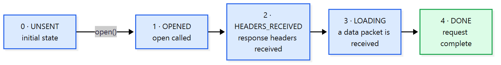
- การเปลี่ยน state จัดการได้ด้วย property
request.onreadystatechange
💡 จำลำดับ 0–4: U-O-H-L-D → ยังไม่ส่ง → เปิดแล้ว → ได้ header → กำลังโหลด body → เสร็จ
ไม่ได้รัน XHR ด้วย node เพราะ
XMLHttpRequestเป็น object ของ browser (สไลด์ 79 "built-in browser object") — ผลตามที่อธิบายในตารางด้านบนมาจากสไลด์
9.2 Fetch ใช้ยังไง?
แก่นfetch(url, [options]) คืน Promise — อ่านผล 2 ขั้น: (1) resolve เป็น Response ทันทีที่ server ตอบ headers → เช็ก status/ok, (2) เรียก method อ่าน body เช่น .json() ซึ่งคืน Promise อีกชั้น — Promise จะ reject เฉพาะเมื่อส่ง HTTP request ไม่ได้
- Fetch = ฟังก์ชันสมัยใหม่ สำหรับส่ง network requests
- Fetch return as promises
let promise = fetch(url, [options])
| พารามิเตอร์ | ความหมาย |
|---|---|
url |
URL ที่จะขอ |
options |
optional เช่น method, header |
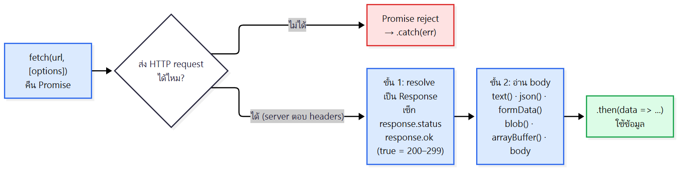
ขั้นที่ 1 (สไลด์ 87): promise จาก fetch resolve เป็น object ของ class Response ทันทีที่ server ตอบกลับด้วย headers
- ตรงนี้ เช็ก HTTP status ได้
- promise reject ถ้า fetch ส่ง HTTP-request ไม่ได้
- property ที่ใช้เช็ก:
status– HTTP status codeok– Boolean,trueถ้า status อยู่ในช่วง 200–299
ขั้นที่ 2 (สไลด์ 88): อ่าน response body — class Response มี method แบบ promise หลายตัว:
| Method | ได้ body เป็น |
|---|---|
response.text() |
text |
response.json() |
parse เป็น JSON |
response.formData() |
FormData |
response.blob() |
Blob (binary data with type) |
response.arrayBuffer() |
ArrayBuffer |
response.body |
ReadableStream — อ่าน body ทีละ chunk ได้ |
⚠️
response.bodyเป็น property (ReadableStream) ไม่ใช่ method เหมือนตัวอื่นในตาราง
9.3 ตัวอย่าง: เรียก Google Custom Search ด้วย fetch
แก่นเอาคำค้นจาก textbox มาต่อเป็น URL ของ API → fetch → .then(res => res.json()) ได้ข้อมูล → แสดงใน #output ด้วย JSON.stringify → ถ้าพลาดไป .catch
function getConferenceResponses() {
let query = document.querySelector("#q").value; // Get query from a textbox
console.log(query);
let rooturl =
"https://www.googleapis.com/customsearch/v1?key=" +
APi_key +
"&cx=" +
cx +
"&q=" +
query; //Request URL
fetch(rooturl)
.then((res) => res.json()) // Get JSON from the response
.then((data) => {
console.log(data);
document.querySelector("#output").innerHTML =
"<p>" + JSON.stringify(data, null, "\t") + "</p>";
})
.catch((err) => console.log(err));
}
อธิบายทีละขั้น:
document.querySelector("#q").value→ อ่านคำค้นจาก textbox idqแล้วconsole.logออกมา- ต่อ string เป็น URL:
…/customsearch/v1?key=<APi_key>&cx=<cx>&q=<query>— นี่คือ URL แบบเดียวกับตัวอย่าง "Identifying the resource" (หัวข้อ 8.7) โดย?parametersคือkey,cx,qAPi_keyและcxไม่ได้ประกาศในสไลด์ — เป็นค่าที่ต้องมีอยู่แล้ว (key ของ API และรหัส search engine)
fetch(rooturl)→ ส่ง request ไปที่ URL นั้น (ไม่ได้ใส่ options) ได้ Promise กลับมา.then((res) => res.json())→ ขั้นที่ 1→2 ของ fetch: ได้ Response แล้วสั่งอ่าน body เป็น JSON (คืน Promise อีกชั้น).then((data) => {...})→ ได้ข้อมูลเป็น object →console.log(data)และใส่ลงใน element#outputโดยแปลงกลับเป็น string ด้วยJSON.stringify(data, null, "\t")(ย่อหน้าด้วย tab ให้อ่านง่าย) ครอบด้วย<p>…</p>.catch((err) => console.log(err))→ ถ้า Promise ถูก reject (เช่นส่ง request ไม่ได้) จะพิมพ์ error
ตรวจด้วย node (จำลอง ไม่ได้ยิง API จริง): แทน document ด้วย object ปลอมที่ textbox มีค่า "web services", ตั้ง APi_key = "MYKEY", cx = "MYCX" และแทน fetch ด้วยฟังก์ชันปลอมที่ตอบ { kind: "customsearch#search", items: [] }
web services ← ขั้น 1 console.log(query)
URL = https://www.googleapis.com/customsearch/v1?key=MYKEY&cx=MYCX&q=web services ← ขั้น 2
{ kind: 'customsearch#search', items: [] } ← ขั้น 5 console.log(data)
innerHTML = "<p>{\n\t\"kind\": \"customsearch#search\",\n\t\"items\": []\n}</p>" ← ขั้น 5 (\t = ย่อหน้าด้วย tab)
กรณีจำลองให้ fetch reject (TypeError: Failed to fetch) → ไม่เข้า .then ทั้งสอง แต่ไปที่ .catch แล้วพิมพ์ error ออกมา ตรงกับขั้นที่ 6
ผลจริงของ Google API (หน้าตา
data) สไลด์ไม่ได้แสดง — ผลด้านบนเป็นค่าจำลองเพื่อดูลำดับการทำงานเท่านั้น
คำศัพท์สำคัญ
| คำศัพท์ | ความหมาย | จำง่าย ๆ ว่า |
|---|---|---|
| Layer | ชั้นทางตรรกะของระบบ (data / business logic / presentation) | "แบ่งงาน" |
| Tier | การแยก layer ออกไปอยู่คนละที่ทางกายภาพ | "แบ่งเครื่อง" |
| N-tier / Distributed application | เพิ่ม application server เป็นหลาย tier เพื่อกระจาย business logic | 3-tier ที่ตรงกลางแตกหลายตัว |
| CGI script | โปรแกรมที่ web server เรียกตาม URL ทำตัวเป็น client ของระบบเดิม | เว็บยุคแรก |
| HTTP | โปรโตคอลแลกเปลี่ยนเอกสาร เป็นรากฐานการแลกข้อมูลบนเว็บ | stateless แต่ไม่ sessionless |
| MIME type / Media type | บอกชนิดของเอกสารที่ส่ง เช่น text/html, application/json |
"ป้ายบอกชนิดของ" |
| URI / URL | Uniform Resource Identifier / Locator — ระบุ resource ที่ขอ | ที่อยู่ของ resource |
| Status code | ตัวเลขผลของ request: 200 OK, 404 Not Found, 500 Internal Server Error | 200 สำเร็จ · 404 หาไม่เจอ · 500 server error |
| XML | markup ที่ตั้ง tag เอง ใช้กำหนดโครงสร้างข้อมูลเพื่อแลกเปลี่ยน/จัดเก็บ | HTML = หน้าตา, XML = ความหมาย |
| XML Schema | แม่แบบกำหนดโครงสร้างและชนิดข้อมูลของเอกสาร XML | แบบฟอร์มเปล่า |
| Cookie | ข้อมูล key/value เล็ก ≤4KB มี expiry ถูกส่งไปกับทุก request | บัตรคิวที่ยื่นทุกครั้ง |
| LocalStorage | ที่เก็บ key/value (string) ≥5MB/domain อยู่จนกว่าจะลบ ไม่ถูกส่งไป server | ตู้เก็บของในเครื่อง |
| sessionStorage | เหมือน LocalStorage แต่อยู่แค่ใน tab ปัจจุบัน (refresh ไม่หาย) | ตู้ประจำ tab |
| Serialisation / Stringifying | แปลง object → string | JSON.stringify |
| Deserialisation / Parsing | แปลง string → object | JSON.parse |
| JSON | JavaScript Object Notation — string มาตรฐานส่งข้อมูลมีโครงสร้าง key ต้องมี "…" |
6 types: Number String Boolean Array Object null |
| Web Service | ระบบให้เครื่องคุยกับเครื่องข้าม network (W3C) | WS ทุกตัวเป็น API |
| SOAP / WSDL | Simple Object Access Protocol / Web Services Description Language | มาตรฐานของ WS |
| POX | XML แบบหนึ่งที่สไลด์ยกเป็น encoding ของ WS คู่กับ SOAP | XML (SOAP or POX) |
| REST | REpresentational State Transfer — architecture ไม่ใช่ protocol | 6 constraints |
| Stateless | server ไม่เก็บ context, ทุก request ต้องมีข้อมูลครบ | no session, no history |
| HATEOAS | Hypermedia as the Engine of Application State — ใช้ links ใน response นำทาง API | ตาม links ไป |
| Idempotent | คำที่สไลด์ใช้: PUT เป็น idempotent, POST ไม่ใช่ (สไลด์ไม่ได้นิยาม) | POST ✗ / PUT ✓ |
| XMLHttpRequest (XHR) | built-in browser object สำหรับส่ง HTTP request (แบบเก่า) | open → send → onload |
| readyState | สถานะ XHR 0–4: UNSENT, OPENED, HEADERS_RECEIVED, LOADING, DONE | U-O-H-L-D |
| Fetch | ฟังก์ชันสมัยใหม่ส่ง request คืน Promise | 2 ขั้น: Response → body |
response.ok |
true เมื่อ status 200–299 |
– |
สรุปท้ายบท / จุดที่มักออกสอบ
- 3 layers: Resource Management (database) / Application Logic (Business) / Presentation (UI) — tier = แยกทางกายภาพ
- 1-tier = เครื่องเดียว (dumb terminal + mainframe) ผูกแน่น ขยายยาก | 2-tier = Client-Server | 3-tier = front-end / middleware / back-end | N-tier = Distributed application เพิ่ม app server
- HTTP: simple & human readable, extensible, stateless but not sessionless | ใช้ RFC 822 mail headers + MIME types
- Request = Request Line (Method + Path + Version) + Headers + Body | Response = Status Line (Version + Code + Text) + Headers + Body
- Status: 200 OK / 404 Not Found / 500 Internal Server Error | Response
Content-Length= ขนาด body เป็น bytes - GET ใส่ parameter ใน URL (
?name=...&email=...) | POST ใส่ใน body (application/x-www-form-urlencoded) - HTML = แสดงผล (tag กำหนดไว้แล้ว) | XML = ข้อมูล (ตั้ง tag เอง, schema มี data types, ไม่ได้ทำให้ browser, ใช้ marshalling/serializing)
- Cookie ≤4KB, มี expiry, ส่งทุก request, server เข้าถึงได้ | LocalStorage ≥5MB/domain, อยู่จนลบ, ไม่ส่ง, JS เท่านั้น, key/value ต้อง string | sessionStorage = tab ปัจจุบัน, refresh ไม่หาย
- Cookie ใช้ทำ: Session management, Personalization, Tracking
- serialisation/stringifying ↔ deserialisation/parsing |
JSON.stringify(object)/JSON.parse(JSON) - JSON vs object literal: JSON is a String, "does not support properties", property names in quotes | 6 basic types
- WS นิยาม W3C: interoperable machine-to-machine interaction over a network | encoding: XML (SOAP/POX), JSON | สร้างบน SOAP, WSDL, HTTP, REST
- All WS are APIs, not all APIs are WS | WS ต้องใช้ network เสมอ
- REST = architecture (ไม่ใช่ technology/standard/protocol) ใช้ HTTP, URL, XML/HTML/JSON, MIME types
- 6 REST constraints: Client/Server, Stateless, Cacheable, Uniform Interface, Layered Systems, Code-On-Demand (optional)
- Uniform interface 4 ข้อ: Identifying the resource, Resource representation, Self-descriptive messages, HATEOAS
- Resource: nouns not verbs, one logical URI, 'Nice' URIs | ตัวอย่าง URL: googleapis.com = Company/Owner, customsearch = API Name, v1 = Version
- GET read | DELETE remove | POST create (sometimes update) | PUT update (sometimes create) | PATCH partial update
- POST not idempotent, PUT is | PUT = client กำหนด URI | POST = server กำหนด URI
- XHR:
new XMLHttpRequest()→open(method, URL, [async, user, password])→send([body])| events load / error / progress | load เกิดแม้ status 400/500 readyState0 UNSENT, 1 OPENED, 2 HEADERS_RECEIVED, 3 LOADING, 4 DONE +onreadystatechangeresponseType: "", text, arraybuffer, blob, document, json (parse อัตโนมัติ)- Fetch: คืน Promise, reject เฉพาะเมื่อส่ง request ไม่ได้ |
ok= true เมื่อ 200–299 | body: text(), json(), formData(), blob(), arrayBuffer(), body (ReadableStream)
คู่ที่มักสับสน
| A | B | ต่างกันตรงไหน |
|---|---|---|
| Layer | Tier | layer = แบ่งตามหน้าที่ (ตรรกะ) / tier = แยกกันทางกายภาพ |
| 2-tier | 3-tier | 2-tier = client + database server (app layer อยู่ฝั่งไหนก็ได้) / 3-tier = มี application server กลางแยกออกมา |
| 3-tier | N-tier | N-tier เพิ่มจำนวน application server เป็นหลาย tier เพื่อกระจาย business logic |
| Request Line | Status Line | request: Method + Path + Version / response: Version + Status code + Status text |
Accept |
Content-Type |
Accept = ชนิดที่ client อยากได้กลับ / Content-Type = ชนิดของ body ที่กำลังส่ง |
| HTML | XML | HTML = แสดงผล tag ตายตัว ให้ browser / XML = โครงสร้างข้อมูล ตั้ง tag เอง ให้โปรแกรม |
| Cookie | LocalStorage | 4KB vs 5MB · มี expiry vs อยู่จนลบ · ส่งทุก request vs ไม่ส่ง · server+client vs client เท่านั้น |
| LocalStorage | sessionStorage | LocalStorage แชร์ทั้ง domain / sessionStorage อยู่แค่ tab ปัจจุบัน |
| Serialisation | Deserialisation | object → string (stringify) / string → object (parse) |
| Object literal | JSON | object literal เป็น object, key ไม่ต้องมีคำพูด / JSON เป็น string, key ต้องมี "…" |
| Web Service | API | WS ต้องใช้ network และเป็น API เสมอ / API ไม่จำเป็นต้องใช้ network |
| SOAP | REST | SOAP = Protocol (ชื่อบอก) / REST = architecture ไม่ใช่ protocol |
| POST | PUT | POST create, ไม่ idempotent, server กำหนด URI / PUT update, idempotent, client กำหนด URI |
| PUT | PATCH | PUT update resource / PATCH update เฉพาะบางส่วน |
| Stateless (REST) | Cacheable (REST) | stateless = server ไม่จำ request ก่อน / cacheable = client นำ response เดิมมาใช้ซ้ำได้ |
XHR load |
XHR error |
load = request เสร็จแม้ได้ 400/500 / error = ส่ง request ไม่ได้เลย |
status |
statusText |
status = ตัวเลข (200) / statusText = ข้อความ (OK) |
response.ok |
response.status |
ok = boolean (true ถ้า 200–299) / status = เลข status code |
| XMLHttpRequest | Fetch | XHR = object แบบเก่า ใช้ event/readyState (รองรับสคริปต์เดิม/browser เก่า) / Fetch = ฟังก์ชันใหม่ คืน Promise อ่านผล 2 ขั้น |